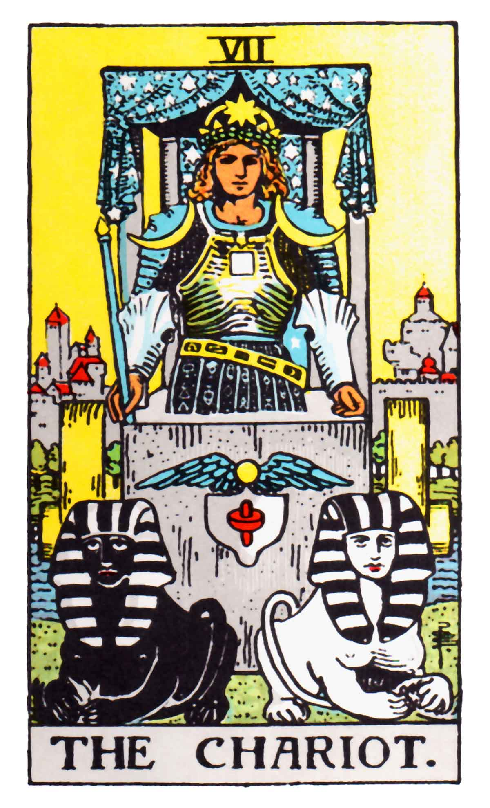

<div class="detail-container">
  <div class="wrapper">
    <div class="img">
      <!--  -->
      
    </div>
    <div class="img-definition">
      CUNG BẠCH DƯƠNG có tên khác là Dương Cưu (21/3-20/4): Đây là cung hoàng
      đạo được ra đời đầu tiên và mang bên mình mệnh lửa. Chính vì yếu tố đó
      cộng với sự nhiệt huyết của bản thân mà cung Bạch Dương luôn được tán
      dương là những nhà lãnh đạo tài ba và rất có năng lực.
    </div>
    <div class="content">
      <div class="content-left">
        <div class="content-left-header">CUNG BẠCH DƯƠNG CÓ Ý NGHĨA GÌ?</div>
        <div class="content-left-detail">
          Những điều về cung Bạch Dương vẫn luôn là một ẩn số khiến nhiều người
          rất tò mò và nóng lòng muốn tìm hiểu. Để biết được những bí mật về
          cung Bạch Dương hay ý nghĩa của chúng thì trước tiên phải nắm rõ được
          những tính chất quan trọng. <br />
          Bạch Dương (chòm sao) được xem là linh vật xuất hiện đầu tiên trong
          vòng tròn hoàng đạo. Hơn thế nữa, Bạch Dương sở hữu cho mình nguyên tố
          lửa khiến cho sự nhiệt huyết và năng lượng ở linh vật này không bao
          giờ cạn kiệt. <br />
          Dựa vào tất cả yếu tố trên, ta nhận thấy rõ rệt rằng đây là cung hoàng
          đạo có khả năng lãnh đạo, dẫn dắt các chòm sao khác. Ngoài ra, khi
          nhắc đến những điều về cung Bạch Dương, người ta thường biết đến với ý
          chí kiên cường, bất khuất và không hề bị lung lay khi gặp khó khăn thử
          thách.
        </div>
      </div>
      <div class="content-right">
        <div class="content-right-header">CUNG BẠCH DƯƠNG LÀM NGHỀ GÌ?</div>
        <div class="content-right-detail">
          Với một tính cách hướng ngoại và hoạt bát như Bạch Dương thì không thể
          nào làm việc phù hợp trong những khuôn khổ văn phòng đầy ngột ngạt và
          bí bách.<br />
          Tâm hồn họ luôn muốn được tự do và khám phá những điều mới mẻ xung
          quanh mình. Chính vì thế công việc mà họ làm phải đáp ứng được những
          yếu tố đó.<br />
          Bạch Dương có thể tận dụng tính cách năng nổ và đầy nhiệt huyết của
          mình để làm các công việc như hướng dẫn viên du lịch, người dẫn chương
          trình, chuyên viên kinh doanh.<br />
        </div>
      </div>
    </div>
  </div>
</div>
